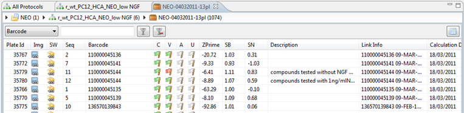

The Plate List shows a lot of information about the plate like Description, Link info, Calculation date etc.
The Plate List uses some symbols to make some things easier to recognise:
| This icon is visible when a plate has sub-well data available | |
| This icon is visible when a plate has an image attached. | |
| These icons represent the calculation status, valid status, approval status and upload status of a plate. (Validated, Invalidated, not yet validated) |
The 3 columns (Zprime, SB and SN) are specific for the currently selected feature, and will change their content when you pick another feature in the Feature Selector.